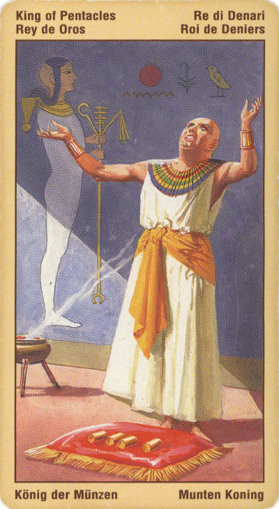

Король Пентаклей
Иначе Фараон или Владыка Пентаклей.
Король представляет собой человека, который в материальном мире чувствует себя как дома - он любит жизнь, а также радости и удовольствия, связанные с миром природы. Нередко такие люди успешны и состоятельны, они создают свою мощную материальную базу, расходуя на это немало денег, сил и времени, причем действуют всегда последовательно и осмотрительно. За их заурядной внешностью часто скрывается страстная и чувственная натура, что делает из них преданных возлюбленных.
Значение: Это – человек, удовлетворенный своей судьбой. Он доволен, а потому миролюбив и счастлив. Добрый отец, умный руководитель, прекрасный супруг. Он долго приобретал, накапливал, собирал сокровище. Это не обязательно материальное богатство: накапливать можно и знания. Он всегда готов встать на защиту того, чем владеет.
Просвещенный Король Пентаклей готов помочь другим, и если Вам необходима финансовая помощь индивидуального человека или учреждения, выпав, карта указывает, что Вам помогут.
Карта может указывать на устойчивый успех и прогресс в бизнесе, карьере или в реализации какого-то проекта. В других случаях эта карта может символизировать традиционную и авторитетную организацию или профессию.
Короля Денариев отличает хорошее чутье, инстинкт, позволяющий распознавать, что реально, а что нет, какое дело стоит того, чтобы им заниматься, а за какое и браться нечего, и каков будет результат. Кроме того, у него прекрасное чувство времени: он понимает, что истинные ценности "созревают" медленно, и умеет ждать.
Он терпелив и не признает поспешности. Кроме того, он выражает нашу радость жизни, любовь к развлечениям и удовольствиям, а также плотскую чувственность. Но у него есть и теневая сторона: это неутолимая похоть, прожженное торгашество или вальяжное безделье - тот самый "Обломов внутри нас.
Этот человек прекрасно чувствует конъюнктуру сегодняшнего дня и знает, "на какую лошадку ставить". Нищета ему не грозит. Умение делать деньги у него в крови, скорее всего, сейчас он обладает солидной собственностью.
В перевернутом положении – прагматизм, расчетливость или упрямство.
Тип коррумпированного политика или бизнесмена, пользующегося грязными средствами для достижения своих целей. Перевернутый король пентаклей коварен, жаден, верить ему нельзя ни в чем.
В отрицательном значении:опасный человек, конкурент, мафиози, недалекий умом. Опастность, порок, самонадеянность, мстительность.